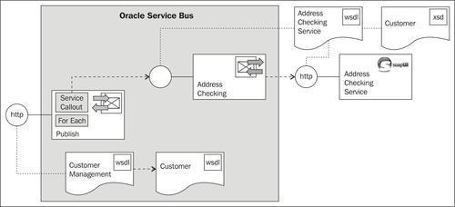
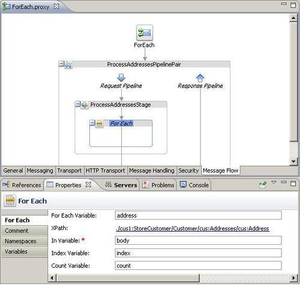
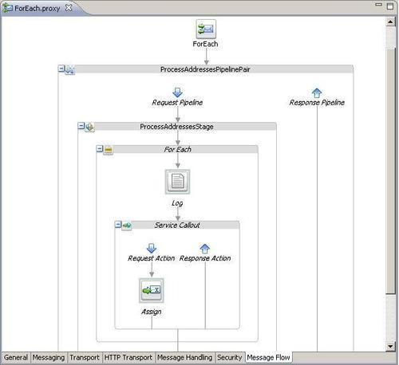
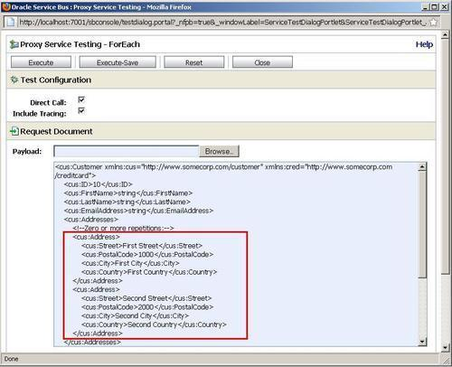
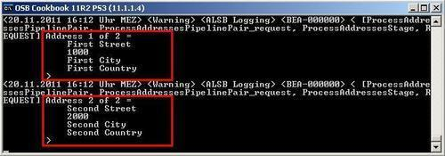

This recipe will show we can loop over a collection of information by using the For Each action. We will implement a proxy service accepting a Customer element through a one-way interface. The proxy service will use the For Each action in its message flow to loop over the single addresses inside the addresses collection.
Each address will then be sent to an Address Checking Service which would check the address for correctness. In our case, this service is a mock service implemented in soapUI. To better see the sequential nature of the processing, the Address Checking Service is written so that it takes four seconds to respond.

You can import the OSB project containing the base setup for this recipe into Eclipse OEPE from \chapter-9\getting-ready\using-foreach-to-process-collection.
Start the soapUI mock service simulating the Address Checking Service by double-clicking on start-AddressCheckingService.cmd in the \chapter-9\getting-ready\misc folder.
Let's create the proxy service with a one-way interface accepting a Customer XML Schema type. In Eclipse OEPE, perform the following steps:
ProcessAddressesPipelinePair. ProcessAddressesStage. address into the For Each Variable field. ./cus1:StoreCustomer/Customer/cus:Addresses/cus:Address into the Expression field. body into the In Variable field, index into the Index Variable field and count into the Count Variable field.
concat('Address ', $index, ' of ', $count, ' = ', $address) into the Expression field and click OK. business folder. request into the Request Variable and response into the Response Variable field.<add:CheckAddress
xmlns:add="http://www.osbcookbook.org/AddressCheckingService/">
{$address}
</add:CheckAddress>
request into the Variable field.
Now we can test the proxy service. In the Service Bus console, perform the following steps:
proxy folder inside the using-foreach-to-process-collections project.

The For Each action allows us to implement a loop to process each single item of a collection. The loop body can include all the different actions the Oracle Service Bus provides. However, it's not possible to include a node such as a Pipeline Pair or Route inside a loop. Therefore, it's not possible to execute a Routing action inside a loop. To call a service for each item of a collection, a Service Callout or Publish action has to be used in the loop body.